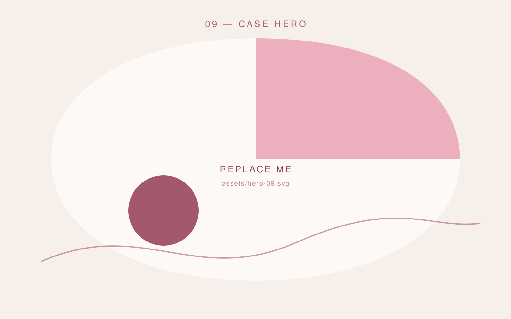
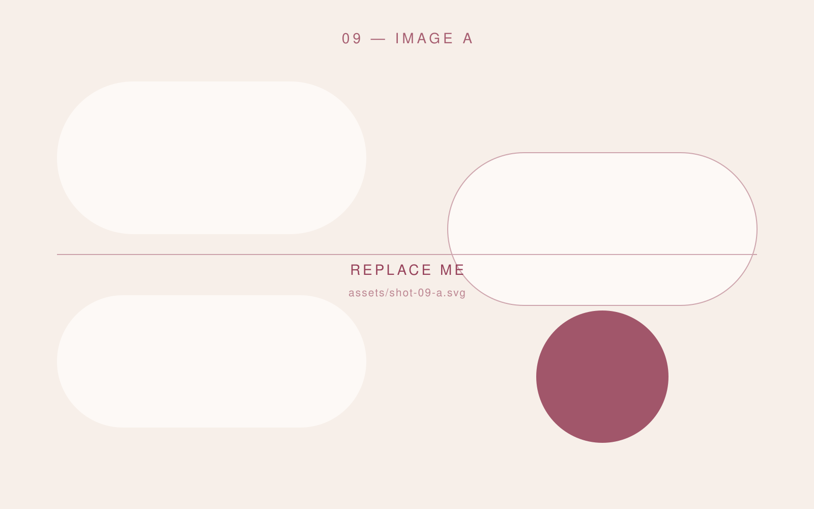
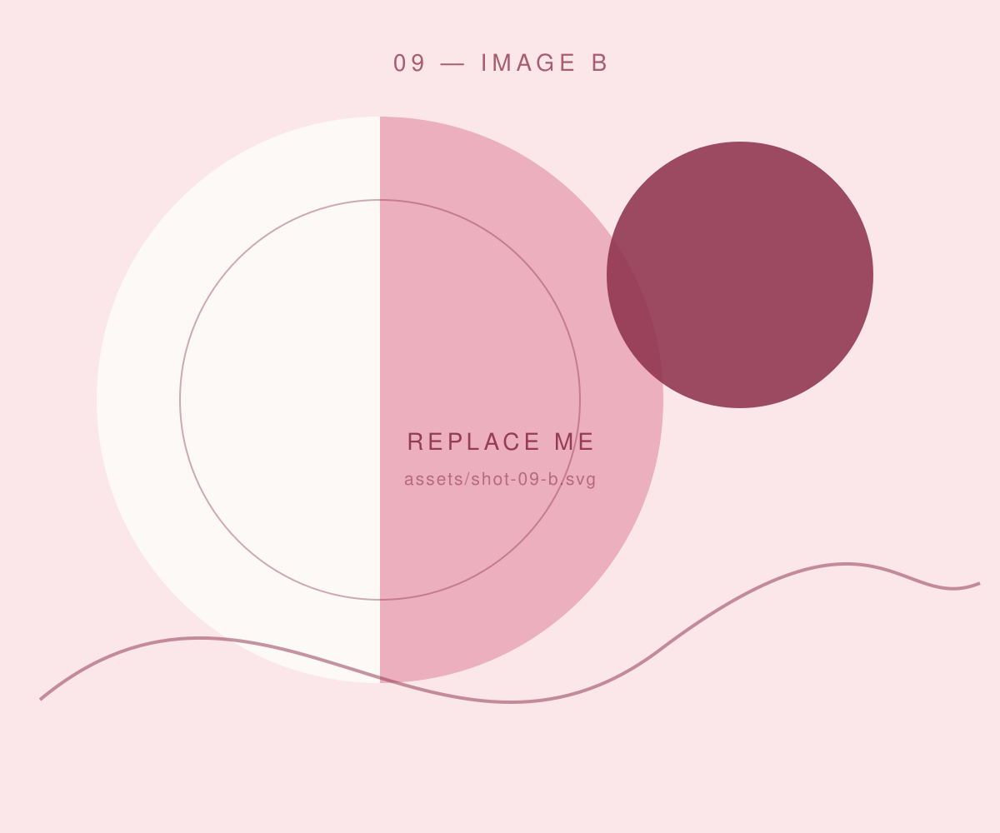

All work
Project 09 — 2026 · Creative Coding · Generative
Soundscape
A generative piece that turns the noise of a street into something you can look at — live, in the browser, with nothing recorded.

The brief
I wanted to learn the Web Audio API properly, and the fastest way to learn something is to promise a showcase you will exhibit it.
My approach
Microphone input drives a particle field: amplitude moves the mass, frequency picks the palette. Most of the work went into restraint — the first version reacted to everything and read as static.
The result
A calm, slow visual that responds to a room rather than to every sound in it. Runs at 60fps on a four-year-old laptop.
Deliverables
- Concept
- Audio analysis
- Canvas renderer
- Exhibition build


Next project — 10
Studio Noa